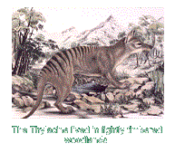

|
Appearance |
Habitat |
Hunting |
Breeding |
Reasons for Extinction |
Sightings |
Habitat
|  |
The Thylacine lived in lightly timbered woodlands and coastal scrub habitats (open grassy plains),
sheltering in nearby rocks during the day. They required a large home range, about 40 sq km
being the minimum area, although 80 sq km would be more appropriate in most habitats.
They stayed in their home range but, as far as is known, they were not territorial.
|
Geographical Locations
| According to fossil records1
and rock paintings, this species occurred on the Australian
mainland and in Papua New Guinea. Scientists believe that the Thylacine disappeared from
these two areas between 2 and 3 thousand years ago. The rock paintings of the Thylacine
in the Kimberley region of Western Australia and in the |
|
|
Northern Territory are all that
remain as evidence of their existence there. The Thylacine have since remained only in the
remote areas in Tasmania2, evidence showing that thylacines were most
abundant around 1890-1902.
|
Recent Times
In recent times there have been sightings of the Thylacine in other parts of the world.
Sightings have been made 70km north-east of Wamena and the Pass valley in the Abenaho
district. The latest piece of the Thylacine jigsaw involves New Guinea. Like Australia,
the Thylacine is known there only from fossil evidence, but recently one researcher has
received reports of Thylacine like animals known to the highland people of Irian-Jaya.
The upland country there is similar to parts of Tasmania, but much less explored, and
would provide ideal conditions for Thylacines. The people there seem to know the animal
well and are not confusing it with wild or feral dogs. There has never been any fossil
remains found in Irian Jaya but fossils have been found in Papua New Guinea. |
1 Fossil remains where found only in two sites.
Bones have been found inside caves in North Kimberley, South Africa, and on the Nullarbor
Plains and near Perth, West Australia.
2 Tasmania is an island and the smallest state of Australia, separated from the
mainland by 255 mile wide Bass Strait. Tasmania is about the size of West Virginia.
Appearance |
Habitat |
Hunting |
Breeding |
Reasons for Extinction |
Sightings |
1998 © Gallant Web Design
|